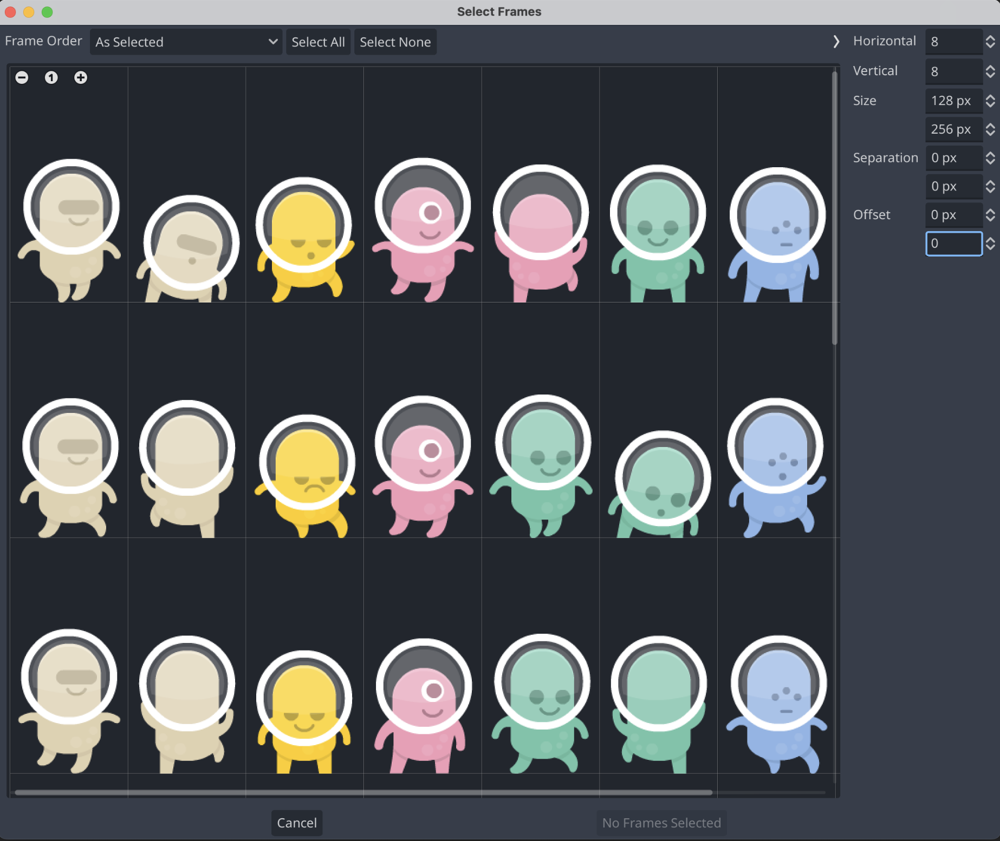
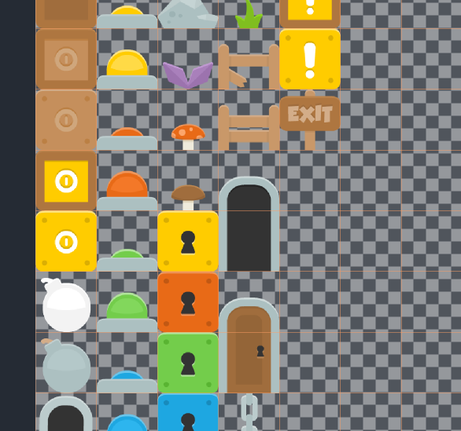
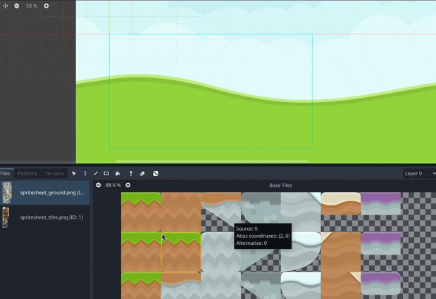

2.2 - Sprite og Tilesheets
Denne siden tar for seg grunnleggende teori rundt Spritesheets og Tilemaps. Vi går ikke over noe Godot spesefik. Vi har brukt Kenney platformer pack i eksemplene.
Spritesheet
Et spritesheet brukes til grafikken til elementer med animasjoner i 2D spill. F.eks. karakterer og fiender. Dette er en bildefil med flere elementer. Disse elementene kalles “sprites”. Hver sprite i spritesheetet må få like mye plass, i dette eksempelet ser vi at hver sprite har 128 x 256 piksler, innenfor disse rammene kan hver sprite være så stor eller liten du vil, men føttene, eller bunnen, av hver sprite skal stå nederst i sin ramme. (et unntak er figurer som aldri skal være borti bakken, som fugl og fisk). Det kan være praktisk å jobbe med et synlig rutenett. Spill kan ha mange spritesheets, så del de opp på et logisk vis så man ikke ender opp med veldig store spritesheet. F.eks kan man ha ett for vennlige karakterer, ett for fiender osv. Karakterer med svært forskjellige proporsjoner bør heller ikke dele samme spritesheet.

For animerte karakterer må hver animasjons-frame være hver sin sprite. Husk å posisjoner sentrert i hver sin frame slik at animasjonen ikke “rister”. Dersom du har en karakter med mange animasjoner, kan det være greit at denne karakteren får sitt eget spritesheet.
Er en sprite veldig stor kan den være alene, f.eks. om en bygning er flere hundre piksler hver vei og kun dukker opp i enkelte sener.
Tilesheet
Tilesheets bruker vi for statiske elementer i 2D spill. Som spritesheets er disse også ett bilde med mange elementer, her kaller vi hvert element en “tile”. Alle tiles i et tilesheet må være like store, og her bør de også være kvadratiske. Større elementer kan gå over flere “tiles”, se døren i dette eksempelet.

Tilesheets bør også deles opp på en måte så man ikke får altfor store bildefiler. F.eks. kan alt som hører til spesifikke levler være i sine egne sheets, og ting som går igjen i flere levler være i et annet. Pass på at alle tilesheet som skal brukes sammen har like store tiles.

Grunnen til at vi deler opp tiles og sprites på dette viset er for at datamaskinen ikke skal måtte laste inn veldig mange filer hver gang spillet starter eller bytter scene, dette vil gå ut over tiden det tar å laste. Og grunnen til at vi ikke har alt for store bilder er for å ikke laste inn mye mer enn det vi trenger da dette vil gå ut over ytelsen til spillet.